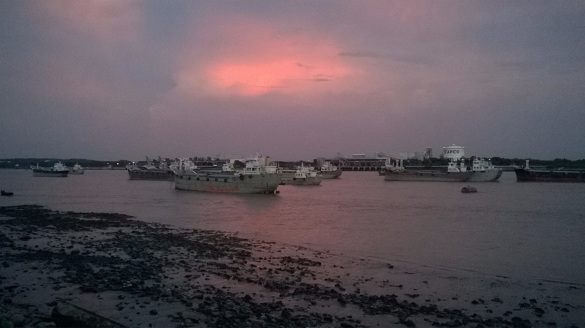
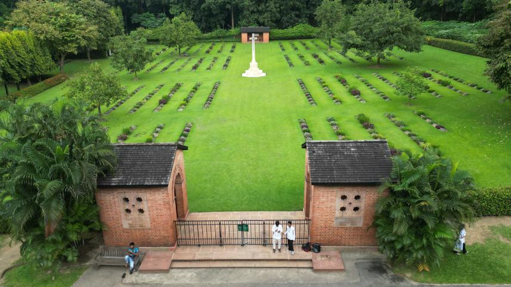

Top Tourist Attractions
Shah Amanat International Airport
The main gateway to Chattogram, this airport connects the city to various domestic and international destinations.
Patenga Sea Beach

A popular spot for locals and tourists alike, offering serene views of the Bay of Bengal, especially mesmerizing during sunset.
Foy’s Lake

A man-made lake surrounded by hills, ideal for boat rides, picnics, and enjoying amusement park facilities.
Naval Beach

A tranquil beach area perfect for leisurely walks and enjoying the coastal breeze.
Karnaphuli Tunnel

Bangladesh's first underwater tunnel, connecting the city's two sides beneath the Karnaphuli River, showcasing modern engineering marvels.
Chattogram Commonwealth War Cemetery

A serene and well-maintained cemetery honoring the soldiers who sacrificed their lives during World War II.